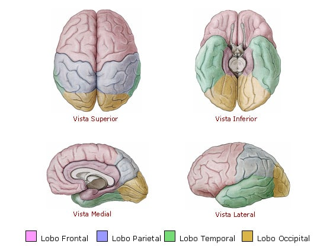
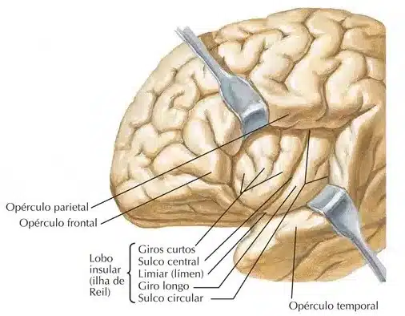
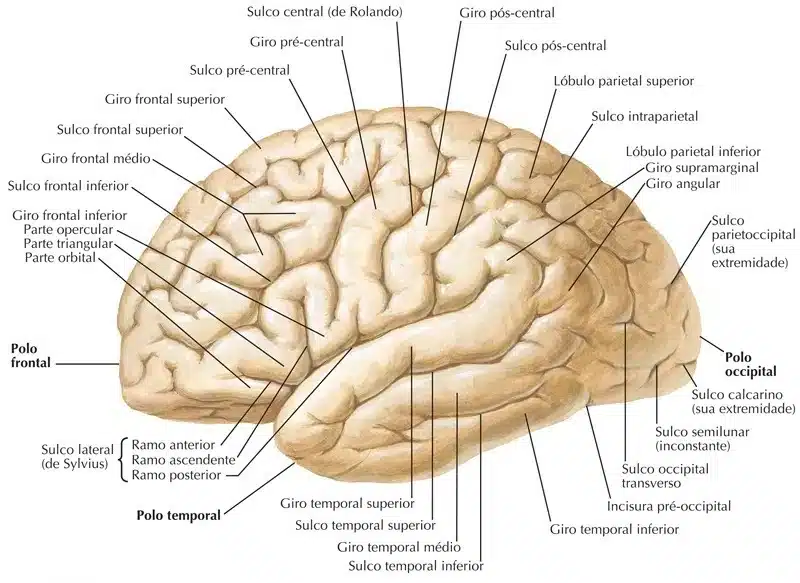
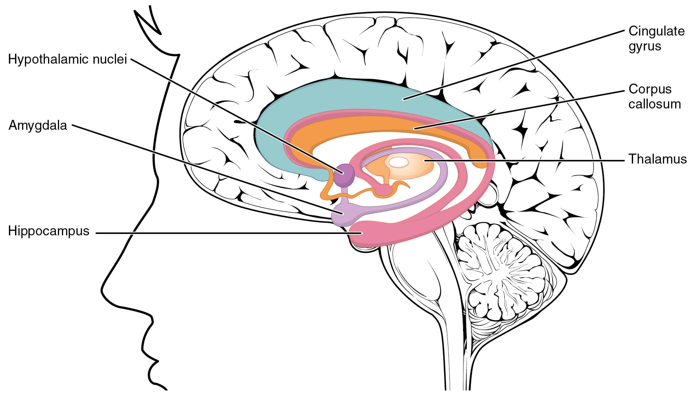
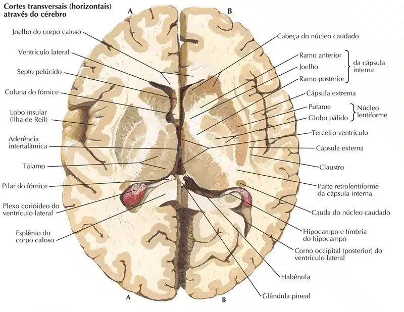

Formado por duas massas laterais, denominadas de hemisférios cerebrais direito e esquerdo.
São separados parcialmente pela fissura longitudinal do cérebro.
Os hemisférios cerebrais apresentam as mesmas características anatômicas, embora variações e alterações de massas (volume e posição) podem ser encontradas ao se comparar os hemisférios, tornando-se assimétricos.
Funcionalmente é mais distinto, o hemisfério esquerdo está relacionado com a lógica e raciocínio, enquanto que o direito com percepção, abstração e musicalidade.
O padrão motor da maior parte das pessoas é comandado pelo hemisfério cerebral esquerdo, que controla os músculos da metade direita do corpo.
A atividade motora pode ser estimulada e treinada durante a vida, capacitando uma pessoa ao ambidestrismo.
Os hemisférios cerebrais se comunicam, a principal estrutura inter-hemisférica de comunicação é o corpo caloso, formado exclusivamente por fibras nervosas mielinizadas.
No interior do telencéfalo estão localizados os ventrículos laterais (direito e esquerdo), em seus respectivos hemisférios cerebrais.
No telencéfalo encontramos circunvoluções denominadas de giros.
Os giros permitiram aumentar a superfície para os neurônios, e ao mesmo tempo diminuir o tamanho do telencéfalo.
Os giros do telencéfalo são separados por sulcos.
O telencéfalo é dividido em partes denominadas lobos.
São cinco lobos anatômicos do telencéfalo e um lobo considerado funcional.
Dos cinco lobos anatômicos, quatro deles se relacionam com os ossos do crânio, recebendo a mesma denominação.
Os lobos anatômicos do telencéfalo são:
Frontal, parietal, temporal, occipital e insular.
O lobo insular não se relaciona com os ossos do crânio.
O lobo funcional do telencéfalo é o lobo límbico, que abrange parte dos lobos frontal, parietal e temporal.
O estudo do telencéfalo pode ser realizado de forma didática levando em consideração as suas três faces:
Súpero-lateral, inferior e medial.


Face súpero-lateral do telencéfalo
Na face súpero-lateral identificamos os quatro lobos do telencéfalo (frontal, parietal, temporal e occipital).
Dois grandes sulcos são visíveis: sulco central e sulco lateral.
Sulco central (“sulco de Rolando”): separa os lobos frontal e parietal. Inicia-se na face medial do telencéfalo, terminando no sulco lateral.
Sulco lateral (“sulco de Sylvius”): separa os lobos frontal do temporal e, o temporal do parietal.
Inicia-se profundamente na base do crânio, dirigindo-se para a face súpero-lateral.
Profundamente ao sulco lateral está localizado o lobo insular.
Outros sulcos estão localizados na face súpero-lateral.
Para a maioria dos sulcos a nomenclatura obedece a localização e posição.
Exemplo: sulco frontal superior ou sulco temporal inferior.
Poucos são os sulcos que fogem do exemplo, como no caso do sulco intraparietal (sulco no sentido ântero-posterior, que divide o lobo parietal em dois lóbulos: superior e inferior).
Os giros da face súpero-lateral serão descritos abaixo, de forma sucinta, e indicaremos as principais funções

Face inferior do telencéfalo
A face inferior do telencéfalo apóia na base do crânio (com exceção do pólo occipital).
Os lobos frontal, temporal e occipital são visualizados nessa face.
Parte dos giros e sulco dos lobos occipital e temporal é contínua, por essa razão, descreveremos esses dois lobos juntos.
Lobos temporal e occipital: na face inferior do telencéfalo, o lobo temporal está alojado na fossa média do crânio, enquanto que, o lobo occipital está separada do fossa posterior do crânio pela presença do cerebelo.
Localizam-se nessa região os giros: temporal inferior, occipitotemporal lateral, occipitotemporal medial (giro lingual), parahipocampal e o únco.
Giro temporal inferior: estende-se da face súpero-lateral, do sulco temporal inferior, até o sulco occipitotemporal.
Giro occipitotemporal lateral: localizado entre os sulcos occipitotemporal e colateral.
Relacionada com a função visual secundária (reconhecimento de cor, face, números e palavras).
Giro occipitotemporal medial: localizado entre os sulcos colateral e calcarino.
O giro occipitotemporal medial está relacionado com a função visual primária.
Giro parahipocampal: continuação do giro occipitotemporal medial, dirigindo-se anteriormente.
O giro parahipocampal anteriormente se curva para constituir o únco e, posteriormente se conecta com o giro do cíngulo.
O giro parahipocampal está relacionado com a memória, ativando-se no momento de recordação topográfica: imagens de regiões e lugares (cidades, quartos, salas).
O únco está relacionado com funções olfatórias.
Lobo frontal: a face inferior do lobo frontal está apoiada na fossa anterior do crânio.
Os giros são irregulares, denominados de giros orbitais.
O sulco olfatório e o giro reto estão relacionados.
Sulco olfatório: aloja o bulbo e o trato olfatório.
O bulbo olfatório contém o corpo celular do segundo neurônio da via olfatória.
Seus axônios formam o trato olfatório, que se dirige posteriormente, dividindo-se em duas estrias olfatórias, uma medial e outra lateral.
A estria olfatória lateral envia informações para o únco e giro parahipocampal, enquanto que a estria olfatória medial envia as informações para a área septal, localizada na face medial do lobo frontal.

Face medial do telencéfalo
A face medial do telencéfalo é estudada nos cortes sagitais medianos do encéfalo.
Evidencia os lobos frontal, parietal e occipital, além de estruturas não corticais, a substância branca, sendo: corpo caloso, fórnice, comissura anterior, lâmina terminal e o septo pelúcido.
Nessa face, também fica evidente as estruturas corticais do lobo límbico, localizadas nos lobos frontal e parietal (no lobo temporal estão localizadas na face inferior).
Abaixo está descrito as estruturas do telencéfalo da face medial em uma sequência mais simples para o estudo.
Corpo caloso: formado por fibras nervosas mielinizadas, é o principal feixe de associação inter-hemisférico.
O corpo calosoé dividido de anterior para posterior em: rostro, joelho, tronco e esplênio.
Fórnice (do latim fornix – arco): formado por fibras mielínicas, que se projetam do córtex do hipocampo para os núcleos dos corpos mamilares (integra parte do sistema límbico – “circuito de Papez”).
Apresenta duas projeções posteriores, denominadas de pilares, que se ligam ao hipocampo.
Os pilares se unem para formar o corpo do fórnice (inferior ao corpo caloso) e, separa-se anteriormente, formando as colunas do fórnice, que se projetam nos corpos mamilares do hipotálamo.
Septo pelúcido (do latim septum – cerca, e pellucidus – transparente): é uma parede triangular, ligado superiormente no tronco e joelho do corpo caloso, até o fórnice, inferiormente.
O septo pelúcido é formado por duas lâminas, separadas uma cavidade estreita (cavidade do septo pelúcido, essa cavidade pode se apresentar dilatada, constituindo o Vº ventrículo).
O septo pelúcido separa os ventrículos laterais.
Giro do cíngulo (do latim cingula – cintura): localizado superiormente ao corpo caloso.
Seu limite superior é o sulco do cíngulo.
O giro do cíngulo tem início no lobo frontal, segue para o lobo parietal, contornando superiormente o corpo caloso.
Na região posterior, próximo ao esplênio do corpo caloso, torna-se estreito formando o istmo do giro do cíngulo, que se comunica com o giro parahipocampal.
Sulco do cíngulo: o sulco do cíngulo está localizado superiormente ao giro do cíngulo.
Em seu trajeto origina o sulco subparietal e o ramo marginal do sulco do cíngulo.
Sulcos calcarinos, parietoccipital, ramo marginal do sulco do cíngulo, central e paracentral: esses sulcos dividem a face medial em áreas específicas.
Estão ordenados de posterior para anterior.
Sulco calcarino (do latim calcarinus – forma de esporão): sulco horizontal, localizado no lobo occipital, que separa o giro occipitotemporal medial (inferiormente) do cúneo (superiormente).
O cúneo está relacionado com a função visual primária.
Sulco parietoccipital: sulco de direção obliqua que separa os lobos occipital e parietal.
Posteriormente ao sulco parietoccipital está o cúneo e, anteriormente o pré-cúneo.
Ramo marginal do sulco do cíngulo: destaca-se da região posterior do sulco do cíngulo, com direção superior.
Separa o pré-cúneo (localizado posteriormente), do lóbulo paracentral (localizado anteriormente).
Sulco central: com início no sulco lateral, o sulco central cruza toda a face súpero-lateral do telencéfalo, terminando na parte superior da face medial.
Separa o lóbulo paracentral em duas áreas: anterior (motora) e posterior (sensitiva).
Sulco paracentral: sulco vertical que termina no sulco do cíngulo, separando o lóbulo paracentral do giro frontal superior.
Próximo ao rostro do corpo caloso é possível identificar a comissura anterior, lâmina terminal e a área septal.
Comissura anterior: fibras de associação inter-hemisféricas, localizada inferiormente ao rostro do corpo caloso.
Estabelece união entre os lobos temporais.
Lâmina terminal: lâmina fina de tecido nervoso localizada entre a comissura anterior (superiormente) e o quiasma óptico(inferiormente).
No desenvolvimento embrionário, o prosencéfalo se divide em duas vesículas, o telencéfalo e o diencéfalo. As vesículas telencefálicas são unidas medialmente pela lâmina terminal.
Área septal: localizada no lobo frontal, anteriormente a lâmina terminal.
Estabelece conexões com o hipotálamo e formação reticular.
É considerada uma área cerebral relacionada com o prazer.
Lobo insular (do latim insula – ilha): lobo de localização profunda ao sulco lateral, sendo recoberto pelos lobos frontal, parietal e temporal.
O córtex da insula está localizado lateralmente à capsula extrema (substância branca do cérebro).
O lobo insular apresenta giros longos (posteriores) e curtos (anteriores).
Está relacionado com funções emocionais (fobias), sensoriais e motoras viscerais, vestibulares, movimentos somáticos e fala (apraxia).
Hipocampo (do grego hippokampos – cavalo-marinho): é uma formação profunda, localizada no lobo temporal, formando um arco sobre o corno temporal do ventrículo lateral. É formado pelo córtex mais antigo (arquicórtex).
A porção anterior do hipocampo é dilatada, e denominada de pé do hipocampo (“corno de Ammon”).
A porção súpero-medial do hipocampo é constituída pelo giro denteado.
Entre o pé do hipocampo e o giro parahipocampal está localizado o subículo (do latim subiculum – que suporta).
O hipocampo está envolvido com função de memória de curto prazo.

Lobo límbico
É constituído por estruturas nervosas que formam um limbo na face medial do telencéfalo (nos lobos frontal, parietal e temporal).
É formado por estruturas corticais e subcorticais.
O lobo límbico está envolvido com o comportamento emocional, sexual e processamentos de memorização.
Componentes corticais do lobo límbico: giro do cíngulo, giro parahipocampal e o hipocampo.
Componentes subcorticais do lobo límbico: corpo amigdalóide, área septal, núcleos mamilares, núcleos anteriores do tálamoe núcleos habenulares.
William James foi o primeiro a propor a teoria das emoções.
Após o indivíduo receber um estímulo, o cérebro gera as emoções (taquicardia, dispnéia, angústia, medo, etc.).
Posteriormente, Walter Cannon propôs outra teoria, com a hipótese de que o tálamo seria o centro fundamental das emoções, e a partir dele os estímulos elétricos seriam enviados ao córtex cerebral e ao hipotálamo (ocorrendo alterações viscerais, via parte autônoma do sistema nervoso).
James Papez demonstrou que não havia apenas um centro cerebral envolvido com as emoções. Sua teoria é a mais importante contribuição no estudo funcional das emoções.
Seu trabalho demonstrou um circuito cerebral reverberativo, que utiliza de estruturas corticais e subcorticais. A direção dos impulsos no circuito proposto por Papez é: hipocampo – fórnice – núcleos mamilares – fascículo mamilotalâmico – núcleos anteriores do tálamo – cápsula interna – giro do cíngulo – giro parahipocampal – hipocampo.
Contribuições do trabalho de Paul MacLean incluíram outras estruturas encefálicas que se conectam com o circuito de Papez, sendo: área pré-frontal, corpo amigdalóide, área septal e tronco encefálico.

Centro medular branco do cérebro
Esse centro é formado por fibras nervosas mielínicas, divididas em dois grupos: fibras nervosas de associação e fibras nervosas de projeção.
Fibras nervosas de associação: conectam áreas corticais entre si, podendo ser intra-hemisféricas ou inter-hemisféricas.
Fibras de associação intra-hemisféricas: fascículo do cíngulo (conecta os lobos frontal e temporal), fascículo longitudinal superior (conecta os lobos frontal, parietal e occipital), fascículo longitudinal inferior (conecta os lobos occipital e temporal), fascículo uncinado (conecta os lobos frontal e temporal), e cápsula extrema (localizada entre o córtex insular e o claustro, conecta o córtex insular ao córtex do giro frontal inferior).
Fibras de associação inter-hemisféricas: comissura anterior (conecta os lobos temporais), corpo caloso(conecta áreas simétricas do córtex cerebral), e comissura do fórnice (conecta os hipocampos).
Fibras nervosas de projeção: conectam áreas corticais com áreas subcorticais.
Cápsula interna: ampla faixa branca, em forma de letra “V”, cujo vértice se dirige medialmente.
É constituída por um ramo anterior (entre os núcleos caudado e lentiforme), um joelho, e um ramo posterior (entre o tálamo e o núcleo lentiforme).
O ramo anterior apresenta fibras provenientes da parte frontal do córtex cerebral para a ponte.
O joelho da cápsula interna contém fibras corticonucleares, provenientes do córtex motor para os núcleos dos nervos cranianos, localizados no tronco encefálico.
O ramo posterior apresenta fibras corticospinais (anteriormente para os membros superiores, em seguida para o tronco e membros inferiores).
A maior parte das fibras aferentes ou eferentes do córtex cerebral passam pela cápsula interna.
Acima da margem superior dos núcleos da base, a cápsula interna se continua como coroa radiada, projetando-se para o córtex cerebral.
Inferiormente aos núcleos da base a cápsula interna forma os pedúnculos cerebrais (no mesencéfalo).
Cápsula externa: localizada entre o claustro e o núcleo lentiforme (putame).
É constituída por fibras profundas frontoccipitais, corticoestriadas e corticorreticulares.
